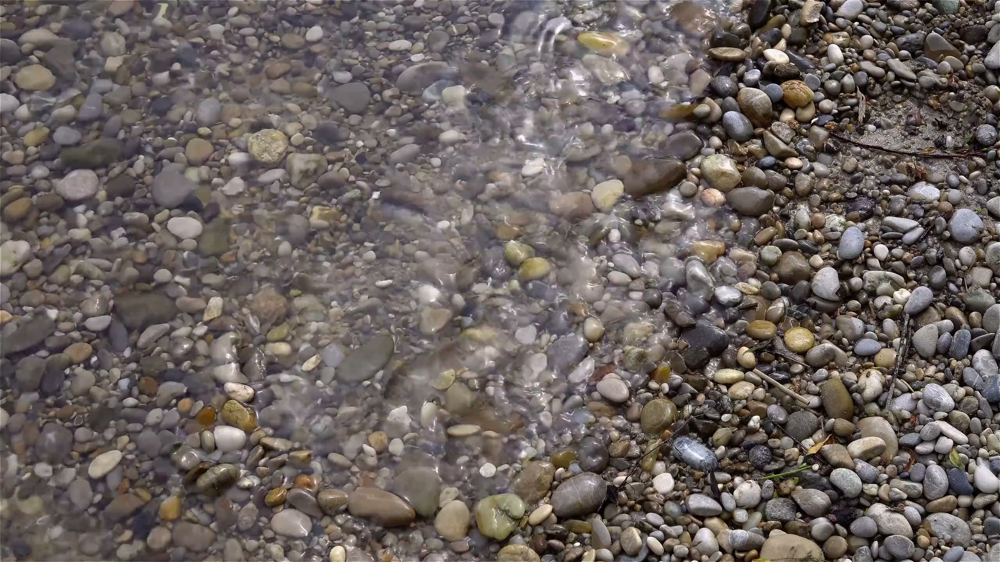

The Shore · 1:30 ·
Ride one out.
An urge rises, peaks and passes. Press Start and stay with this one for ninety seconds. There is nothing to do but watch it go.
Urge Walk is not a crisis service and isn’t a substitute for professional care. In the US, call or text 988 (Suicide & Crisis Lifeline, 24/7). Outside the US, find a helpline.